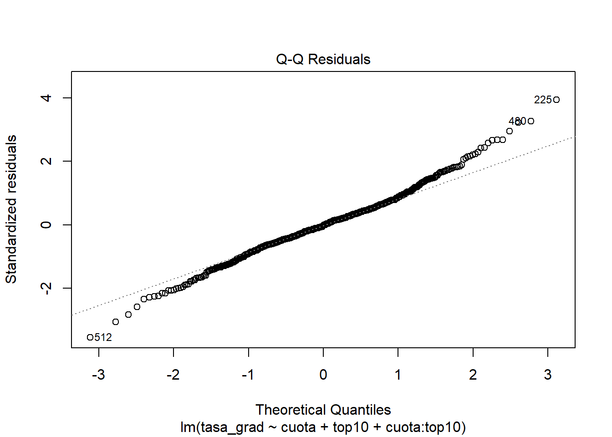

Se nos presenta una base de datos sobre universidades públicas y privadas con las siguientes variables
Variable
Descripción
privada
indica si la universidad es privada o no.
aplicaciones
cantidad de aplicaciones recibidas por la universidad durante el último año (cada estudiante que aspira a ingresar debe presentar una aplicación formal, a partir de la cual es admitido/a o rechazado/a), medida en miles de personas.
ingresantes
cantidad de aplicaciones aceptadas, medida en miles de personas.
estudiantes
cantidad total de estudiantes en carreras de grado, medida en miles de personas.
top10
porcentaje de ingresantes que fueron parte del 10% de estudiantes con mejores calificaciones en sus respectivas escuelas secundarias.
cuota
costo de la cuota de la universidad, medida en miles de dólares.
prof_dr
porcentaje de profesores de la universidad que poseen título de doctorado.
razon
tasa de estudiantes por profesor.
tasa_grad
porcentaje de estudiantes que se gradúan.
La variable de interés es tasa_grad que indica el porcentaje de estudiantes que se gradúan.
El segundo modelo también surge de aplicar el método stepwise pero considerando como modelo maximal aquel con todas las interacciones de segundo orden.
mod2 <-stepAIC(object =lm(tasa_grad ~1, data = df_train), #punto de partidascope =list(upper =lm(tasa_grad ~ .^2, data = df_train)), #máximo modelo posibledirection ="both", #método de seleccióntrace =FALSE, #para no imprimir resultados parcialesk =2, #penalización a emplear (2 = AIC, log(n) = BIC)steps =1000#máximo nro de pasos)mod2
El tercer modelo surge de aplicar la técnica de mejores subconjuntos. Visto que el modelo anterior incluye tres términos (dos efectos principales y una interacción entre ellos) se elige el mejor modelo con 3 variables explicativas.
mejorsub <-regsubsets(x = tasa_grad ~ ., data = df_train)summary(mejorsub)
Puede verse que para todas las métricas salvo BIC, el mejor modelo (en términos de desempeño) es el segundo: aquel que considera dos explicativas y su interacción. Por lo tanto, el modelo seleccionado queda de la forma:
Se puede ver que la variancia de los residuos no es constante para todos los valores ajustados. En particular, se evidencia una mayor variabilidad para tasas de graduación predichas en el rango 55% a 65%.
La hipótesis anterior puede evaluarse mediante el test de Breusch-Pagan.
lmtest::bptest(sel_mod)
studentized Breusch-Pagan test
data: sel_mod
BP = 11.965, df = 3, p-value = 0.007503
Como el p-value resulta inferior al nivel de significación 5%, se rechaza la hipótesis nula, indicando que posiblemente no se esté cumpliendo el supuesto de homocedasticidad de los residuos.
Residuos estandarizados
diagnostico$id <-seq(1:nrow(diagnostico))ggplot(data = diagnostico) +aes(x = id, y = .std.resid) +geom_point(alpha =0.6) +geom_hline(aes(yintercept =0, color ="red")) +geom_hline(aes(yintercept =-3, color ="red")) +geom_hline(aes(yintercept =3, color ="red")) +xlab("Observación") +ylab("Residuos estandarizados") +theme_bw() +theme(legend.position ="none",axis.title =element_text(face ="bold"))
Se encuentran 5 valores con residuos estandarizados mayores a 3 unidades, en valor absoluto. Esto corresponde a un 0.92% de la totalidad de las observaciones de entrenamiento.
Se observa un mayor valor absoluto de los residuos PRESS para las observaciones que tenían errores estandarizados mayores a 3 unidades en el gráfico anterior.
Análisis de normalidad
plot(sel_mod,2)

nortest::ad.test(sel_mod$residuals)
Anderson-Darling normality test
data: sel_mod$residuals
A = 1.6877, p-value = 0.0002482
Dado que el p-value es inferior al nivel de significación del 5%, se rechaza la hipótesis nula de distribución Normal para los errores.
Análisis de colinealidad
car::vif(sel_mod)
there are higher-order terms (interactions) in this model
consider setting type = 'predictor'; see ?vif
Los términos top10 y cuota:top10 presentan un valor de VIF mayor a 5 unidades. Esto indicaría una colinealidad entre estos términos, lo cual resulta lógico dado que el segundo término refiere a la interacción entre el primer término y la variable explicativa restante. De hecho, puede verse que los valores de VIF para el modelo sin interacción se ven reducidos.
car::vif(mod1)
cuota top10
1.46823 1.46823
Interpretación de los predictores
summary(sel_mod)
Call:
lm(formula = tasa_grad ~ cuota + top10 + cuota:top10, data = df_train)
Residuals:
Min 1Q Median 3Q Max
-47.054 -7.871 -0.285 7.113 52.186
Coefficients:
Estimate Std. Error t value Pr(>|t|)
(Intercept) 33.997311 3.043330 11.171 < 2e-16 ***
cuota 2.330176 0.292218 7.974 9.24e-15 ***
top10 0.430303 0.098965 4.348 1.64e-05 ***
cuota:top10 -0.014531 0.007274 -1.998 0.0462 *
---
Signif. codes: 0 '***' 0.001 '**' 0.01 '*' 0.05 '.' 0.1 ' ' 1
Residual standard error: 13.3 on 539 degrees of freedom
Multiple R-squared: 0.3907, Adjusted R-squared: 0.3873
F-statistic: 115.2 on 3 and 539 DF, p-value: < 2.2e-16
Los tres términos reusltan significativos al 5%. Por lo tanto, debido a la presencia de interacción, las interpretaciones de los coeficientes del modelo son las siguientes:
Aumentar mil dólares la cuota se asocia con un incremento promedio en la tasa de graduación igual a 2,33 - 0,015 * top10 por la interacción en unidades porcentuales.
Aumentar en una unidad porcentual el porcentaje de ingresantes que fueron parte del top 10% de estudiantes en sus escuelas secundarias se asocia con un incremento promedio en la tasa de graduación igual a 0,43 - 0,015 * cuota por la interacción en unidades porcentuales.
Regularización y Predicción
Ajuste con técnica Ridge
set.seed(12343)X_train =model.matrix(sel_mod)[,-1]Y_train = df_train$tasa_gradmod_ridge =train(x = X_train, y= Y_train,method ="glmnet",tuneGrid =expand.grid(alpha =0, lambda =seq(0,1,by =0.1)),metric ="RMSE",trControl =trainControl(method ="repeatedcv", number =5, repeats =5))lambda_ridge = mod_ridge$bestTune[[2]]mod_ridge_sel =glmnet(x = X_train, y = Y_train, alpha =0, lambda = lambda_ridge)print(paste("Mejor valor de lambda:", lambda_ridge))
[1] "Mejor valor de lambda: 0.9"
Ajuste con técnica Lasso
set.seed(567)mod_lasso =train(x = X_train, y= Y_train,method ="glmnet",tuneGrid =expand.grid(alpha =1, lambda =seq(0,1,by =0.1)),metric ="RMSE",trControl =trainControl(method ="repeatedcv", number =5, repeats =5))lambda_lasso = mod_lasso$bestTune[[2]]mod_lasso_sel =glmnet(x = X_train, y = Y_train, alpha =1, lambda = lambda_lasso)print(paste("Mejor valor de lambda:", lambda_lasso))
[1] "Mejor valor de lambda: 0"
Para la técnica Lasso, el valor óptimo del parámetro de regularización es \(\lambda = 0\), lo cual implica estimaciones equivalentes a Mínimos Cuadrados Ordinarios. En otras palabras, bajo la técnica Lasso se concluye que no sería necesario aplicar regularización.
Los valores de RMSE son muy similares para ambos métodos de estimación, aunque es menor para Mínimos Cuadrados Ordinarios, indicando que la regularización no mejora la capacidad predictiva del modelo.
Ante un aumento de mil aplicaciones recibidas, la chance de que una universidad tenga una buena tasa de graduación aumenta en un 16%.
Ante un aumento de mil estudiantes en carreras de grado, la chance de que una universidad tenga una buena tasa de graduación disminuye en un 29%.
Ante un aumento en una unidad porcentual del porcentaje de ingresantes que fueron parte del top 10% de estudiantes en sus escuelas secundarias, la chance de que una universidad tenga una buena tasa se graduación aumenta en un 2%.
Ante un aumento de mil dólares en la cuota, la chance de que una universidad tenga una buena tasa de graduación aumenta en un 22%.